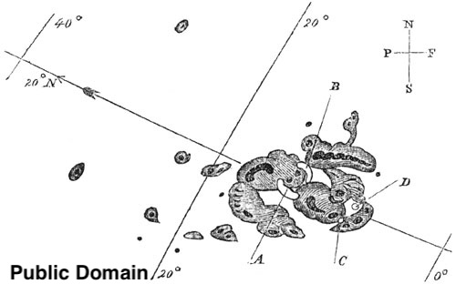
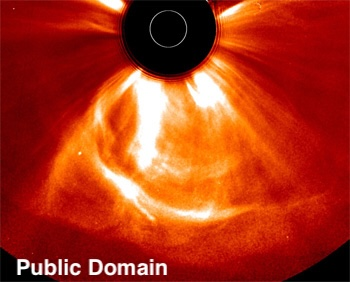
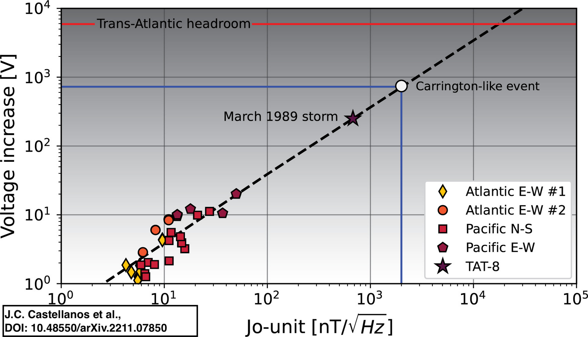
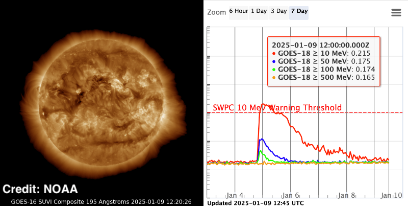
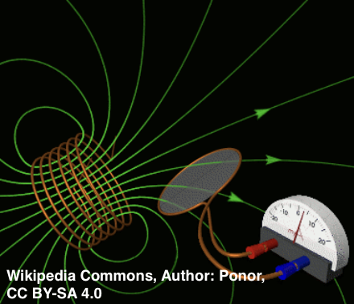
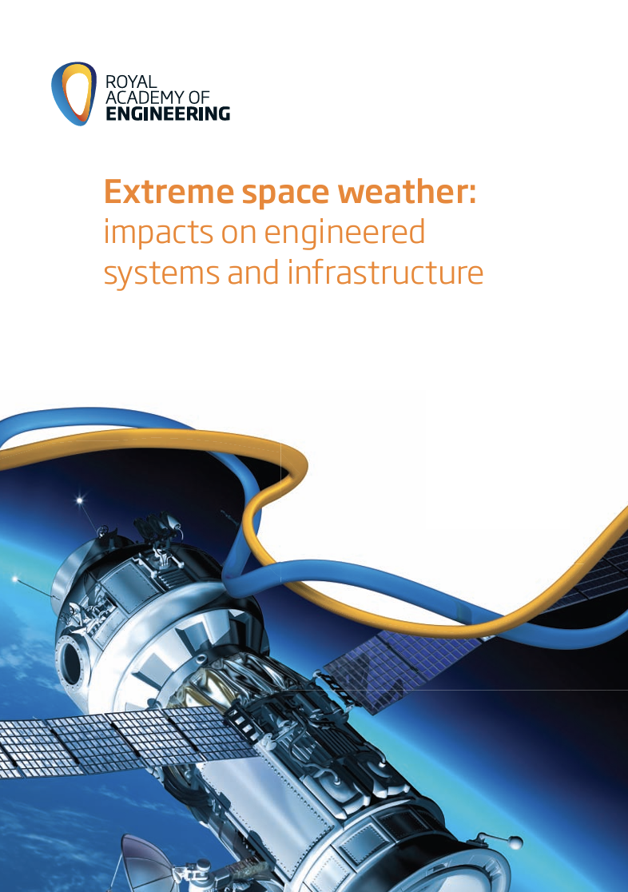
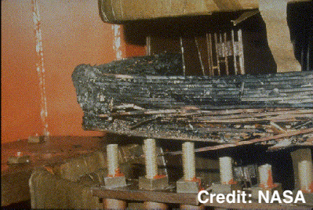

<!-- Title --> ### プログラミング初心者がAITuberを開発してみた --- ### 自己紹介 <div class="profile-container"> <div class="profile-left" data-markdown> * Rin(rindguitar) * 音楽の専門学校を卒業 * 現在、飲食店でフリーター生活 * 2024年11月からプログラミングを始めた * [GitHub](https://github.com/rindguitar) </div> <div class="profile-right"> <img src="assets/images/Avatar.png" alt="avatar" height="350px" width="450px"> </div> </div> --- ### 今日のテーマ <div class="highlight-box" data-markdown> * **全くのプログラミング初心者が書籍やネットを参考にAITuberを開発してみました** * その過程で、学んだことや感じたことを話します </div> --- ### 今日話すこと <div class="simple-box" data-markdown> * AITuberとは何か？ * どのようなものを開発したのか？ * どのようなことで躓き、解決したのか？ * まとめ </div> --- ### AITuberとは何か？ <div class="simple-box" data-markdown> * 簡単に言ってしまえば、「AIによるYoutuber」 * LLMを用いることで、現実には存在しない架空のキャラクターによって配信などの活動を行うもの </div> <div class="container"> <div class="col-left">  * </div> <div class="col-right">  * </div> </div> --- ### どのようなものを開発したのか？ <div class="simple-box" data-markdown> * X（旧Twitter）へのポストの生成と投稿 * はてなブログへの記事生成と投稿 * Youtubeでの配信中の言動 </div> <div class="container"> <div class="col-left"> <img src="assets\images\AITuber_generate_AI_image.jpg" alt="AITuber_book" height="250px"> 参考書: <br> _阿部由延さん著_ _『AITuberを作ってみたら生成AIがよくわかった件』_ </div> <div class="col-right"> <img src="assets\images\AITuber_prompt_image.jpg" alt="AITuber_book" height="250px"> _『AITuberを作ってみたらプロンプトエンジニアリングがよくわかった件』_ </div> </div> --- ### キャラクターのプロフィールを作る <div class="simple-box" data-markdown> * 今回のプロジェクトの根幹になるので最初は好き嫌いだけでも決めておく。 * どんな生活を送っているのか、生活環境などの設定も後々必要になるので考えておく。 - 思いつくたびに追加、変更してももちろん大丈夫。 - もし思いつかない場合はLLMに頼ると楽。 </div>  --- ### Xのポスト内容を生成 <div class="simple-box" data-markdown> * 今回はOpenAIのAPIを利用して開発を進めていきました。 * そのためまず、OpenAIのAPIにプロンプトを送り、出力を受け取るAdapterを作成。 </div>  --- ### Xのポスト内容を生成 <div class="simple-box" data-markdown> * 自分で考えたポストの出力例を添えたプロンプトを作成。 * 理想の内容が生成できるかプログラムでテストする。 </div> --- ### Xへ投稿するプログラムを作成 <div class="simple-box" data-markdown> * キャラクターがどんな内容をポストするかテーマを考えておく。 * XのBOTを利用するのに必要なトークンやキーを取得し、先ほどの生成プログラムを流用しテーマに沿ったポストを投稿できるプログラムを作成。 </div>  --- ### ブログ記事の生成 <div class="simple-box" data-markdown> * キャラクターの行動範囲を考え、その場所ごとに関連する単語を複数用意。 * その場所と関連単語を基に出来事を生成できるようにプログラムを作成。 * 複数の出来事を一日の出来事としてまとめ、日記の形にするプログラムを作成。 </div> <div class="container"> <div class="col-left"> <div class="col-image-container">  </div> </div> <div class="col-right"> <div class="col-image-container"> </div> </div> </div> --- ### 記事の投稿をするプログラムを作成 <div class="simple-box" data-markdown> * 今回ははてなブログを利用したので、必要なアカウント関連のキーを取得し、Xのポスト投稿プログラムを流用してブログの投稿をするプログラムを作成。 </div> --- ### Youtubeでの配信をするための準備 <div class="simple-box" data-markdown> * 配信をするためにOBS、音声合成のためにVOICEVOXを利用。 </div> <div class="container"> <div class="col-left"> <img src="assets\images\OBS-Studio-Logo.webp" alt="OBS_Logo" height="200px"> </div> <div class="col-right"> <img src="assets\images\Voicevox_image.png" alt="Voicevox_image" height="200px"> </div> </div> --- ### 歴史的な大規模太陽嵐 <div class="simple-box" data-markdown> * 1859年: キャリントンイベント * 1989年: カナダのケベック州大停電 * 2012年: ニアミス！大規模太陽嵐の直撃を回避 * 2024年: 現代の高度情報社会に対する警鐘 </div> --- ### 1989年のケベック州大停電 <div class="simple-box" data-markdown> * **太陽嵐がカナダのケベック州全州で9時間の停電を引き起こした** * 600万人が影響を受けた大規模停電 * 変圧器の連鎖故障で完全な復旧まで数週間 * 世界中の電力会社が対策を強化 </div>  --- ### ニアミスだった2012年の太陽嵐 <div class="simple-box" data-markdown> * **2012年7月に発生した大規模太陽嵐** * キャリントンイベント級の大規模太陽嵐 * 発生が9日間遅れてたら地球を直撃していた * もし直撃していたら... </div> --- ### まとめ <div class="highlight-box" data-markdown> * 私たちは宇宙天気と隣り合わせで働いている - 2025年は太陽活動のピーク! - キャリントンイベント級の可能性も？ * 巨人たちの対応 * 各国政府や宇宙機関、Googleなどの巨大IT企業も本気で対策 * ...でも、私たちは？ - 意外な結論：**普段通りが最強** - 基本的な対策を地道に積み重ねる </div> --- ### 参考文献 * キャリントンイベントをはじめとした過去の大規模太陽嵐の事例 * [【ゆっくり解説】人類強制インターネットデトックス！キャリントン・イベントについて語るぜ！](https://www.youtube.com/watch?v=iIeURg3SyDg&pp=ygUe44Kt44Oj44Oq44Oz44OI44Oz44Kk44OZ44Oz44OI) * [Eyewitness reports of the great auroral storm of 1859](https://www.sciencedirect.com/science/article/abs/pii/S0273117706000160) * [The Great Québec Blackout](https://spaceweatherarchive.com/2021/03/12/the-great-quebec-blackout/) * [Solar Storm Knocks Out Farmers' Tractor GPS Systems During Peak Planting Season](https://www.404media.co/solar-storm-knocks-out-tractor-gps-systems-during-peak-planting-season/) --- ### 参考文献 * 大規模太陽嵐への対策 * [Extreme space weather: impacts on engineered systems and infrastructure](https://raeng.org.uk/media/lz2fs5ql/space_weather_full_report_final.pdf) * [Does the internet need sunscreen? No, submarine cables are protected from solar storms](https://cloud.google.com/blog/products/infrastructure/are-internet-subsea-cables-susceptible-to-solar-storms?hl=en) * [On the probability of occurrence of extreme space weather events](https://agupubs.onlinelibrary.wiley.com/doi/full/10.1029/2011sw000734) * [Near Miss: The Solar Superstorm of July 2012](https://science.nasa.gov/science-research/planetary-science/23jul_superstorm/) * [Space weather effects on technology](https://www.spaceweather.gc.ca/tech/index-en.php) --- ### Acknowledgements <div class="simple-box" data-markdown> * 開発を始めるきっかけから相談など、全てに関わっていただいた[さめさん](https://vrchat.com/home/user/usr_dbe1941b-8a13-4751-b98d-038648fdc5dc)に深く感謝を申し上げます </div>